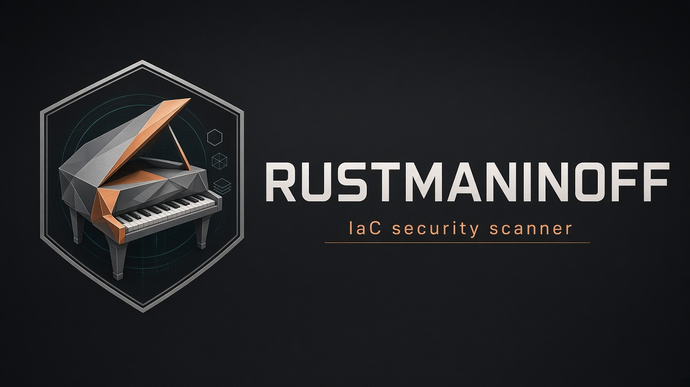
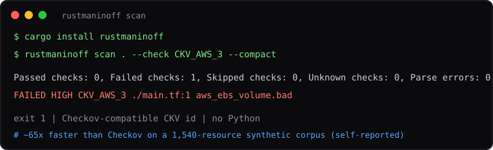

Milliseconds, not seconds
54 ms on 1,540 resources vs 3.50 s Checkov (~65×) and 6.27 s Trivy (~116×). No Python VM and no policy-db refresh on the scan path.

v0.4.0 · Apache-2.0


Compared to Checkov: same published CKV ids and skip comments, without the Python runtime — about 65× faster on a published synthetic corpus (self-reported). 536 checks; Docker 100% / K8s 93.8% of pinned Checkov ids. Terraform, CloudFormation, Kubernetes, and Dockerfiles.

Those tools cover more. Rustmaninoff is the fast path when you already know the CKV ids you want to enforce.
54 ms on 1,540 resources vs 3.50 s Checkov (~65×) and 6.27 s Trivy (~116×). No Python VM and no policy-db refresh on the scan path.
cargo install rustmaninoff, or a GitHub Release binary. Checkov needs Python and plugins. Trivy also pulls vulns, secrets, and SBOMs you may not want in an IaC-only job.
Published CKV ids, YAML pass-conditions, and # checkov:skip= comments. Interpolations stay unknown and never fail CI. SARIF, JUnit, and JSON are first-class.
| Rustmaninoff | Checkov | Trivy | |
|---|---|---|---|
| Runtime | One Rust binary | Python + plugins | Go binary + DBs |
| IaC attribute checks | 536 CKV-style | Large built-in pack | Misconfig policies |
| Graph / CKV2 | First-wave AWS | Yes | Some |
| Helm / Kustomize / plan JSON | No | Yes | Yes |
| Secrets / vulns / SBOM | No | Secrets (Checkov) | Yes |
| Skip comments | Checkov-compatible | Native | Different |
| This corpus (CLI) | 54 ms | 3.50 s | 6.27 s |
Keep Checkov or Trivy when you need full graph depth, Helm, plan JSON, or vulnerability scanning. Use Rustmaninoff when you want CKV gates with published fidelity in CI without that cost. Closing the rest of the gap is the roadmap and the GitHub epics.
cargo install rustmaninoff --locked
rustmaninoff scan . --framework terraform,cloudformation,kubernetes,docker.tf, .tf.json, and OpenTofu .tofu managed resources and data sources. Vars/locals via defaults, TF_VAR_*, and --var-file.
YAML and JSON Resources. Attribute paths are relative to Properties.
Multi-document YAML, including List. Inline skip via checkov.io/skip.
Dockerfile, Containerfile, *.dockerfile. FROM tag, USER, COPY vs ADD, HEALTHCHECK.
Wall-clock CLI time. Median of three runs after warmup (./scripts/bench.sh). 40 Terraform files (1,080 resources), 20 CloudFormation files (300 resources), 20 Kubernetes files (160 resources). Catalogs differ: Rustmaninoff 0.4.0 ran 536 built-in checks. Source: benchmarks/history.json.
| Scanner | Full | Terraform | CloudFormation | Kubernetes |
|---|---|---|---|---|
| Rustmaninoff 0.4.0 | 54 ms | 39 ms | 37 ms | 46 ms |
| Checkov 3.3.21 | 3.50 s | 2.83 s | — | — |
| Trivy 0.74.0 | 6.27 s | — | — | — |
About 65× Checkov and 116× Trivy on the full corpus. Real-world sample (terraform-aws-modules/terraform-aws-s3-bucket@v4.1.2): Rustmaninoff 45 ms, Checkov 12.0 s.
A check definition is the pass condition. Built-in YAML is rewritten from Checkov (Bridgecrew / Palo Alto Networks, Apache-2.0) and keeps published CKV ids.
metadata:
id: CKV_AWS_3
name: Ensure all data stored in the EBS is securely encrypted
severity: HIGH
framework: terraform
resource_types:
- aws_ebs_volume
definition:
cond_type: attribute
attribute: encrypted
operator: equals
value: trueCatalog depth to 536 checks (Docker 100% / K8s 93.8% of pinned Checkov ids), published fidelity table, reproducible benches, and Checkov-compare CI.
Helm, Kustomize, Terraform plan JSON, local modules (v0.5). Baseline/suppressions and Marketplace (v0.6). Unresolved interpolations remain unknown.